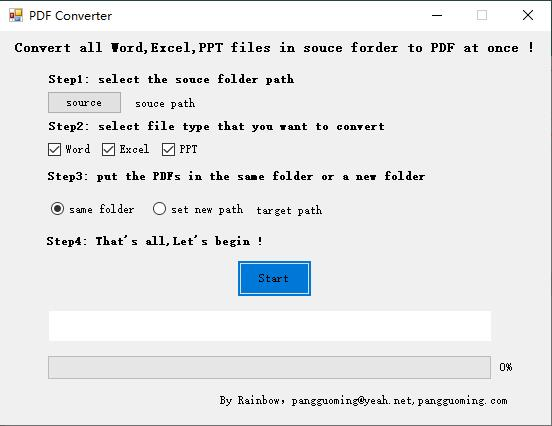

Introduction
Just download PDFcvt and run it on your computer,you can see a simple and clear interface.Then just follow the prompts on the interface.

Operation video
Your Pages site will use the layout and styles from the Jekyll theme you have selected in your repository settings. The name of this theme is saved in the Jekyll _config.yml configuration file.